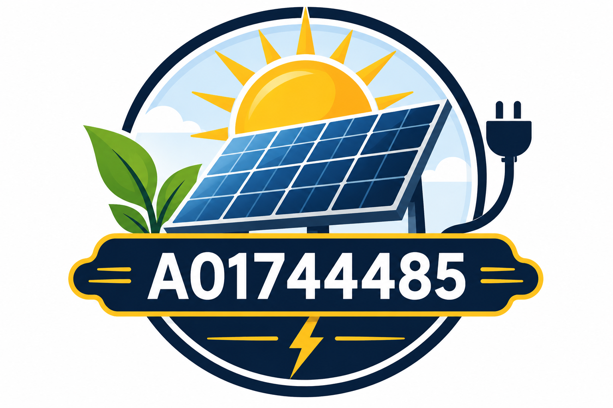

Consumo del aula
Registra equipos, cantidad, potencia y tiempo de uso para estimar demanda (kW) y energía consumida (kWh).

Photon LabsTE1020 · Situación-problema
Una aplicación web que dimensiona y cotiza un sistema fotovoltaico para un aula escolar, con cálculos verificables, componentes reales y un reporte PDF pensado para el cliente.
Desarrollar individualmente una aplicación web para dimensionar y cotizar un sistema fotovoltaico, tomando como caso inicial un aula escolar. La IA puede ayudar a escribir el código, pero la responsabilidad del modelo físico-matemático, la compatibilidad eléctrica, la verificación y la comunicación de la propuesta es del ingeniero.
¿Cómo convertir un análisis de circuitos eléctricos en una herramienta confiable que Photon Labs pueda usar para cotizar proyectos y comunicar su valor a los clientes?
La aplicación es autocontenida: catálogos locales y cálculos ejecutados en el navegador, publicada en GitHub Pages. El resultado es un dimensionamiento y una cotización preliminar, no un proyecto ejecutivo autorizado para construcción.
Registra equipos, cantidad, potencia y tiempo de uso para estimar demanda (kW) y energía consumida (kWh).
Dimensiona cantidad, potencia y configuración serie/paralelo según la demanda y las horas solares pico.
Selecciona un equipo real y verifica potencia, tensiones, corrientes y compatibilidad con el arreglo.
Estima capacidad, configuración y autonomía, indicando supuestos y límites del cálculo.
Productos reales con marca, modelo, especificaciones, precio, proveedor, enlace y fecha de consulta.
Calcula inversión, ahorro estimado y retorno a partir de la tarifa en MXN/kWh que introduce el usuario.
Propuesta técnico-comercial legible, profesional y comprensible para un cliente no especialista.
E = Σ (P · cant · horas) / 1000kWh/día del aula.
N = E / (HSP · Ppanel · PR)Con pérdidas declaradas como supuesto.
Serie: ΣV · Paralelo: ΣIDefine Voc, Vmp, Isc e Imp del arreglo.
C = E_resp / (DoD · η)Capacidad útil según autonomía deseada.
Payback = Inversión / Ahorro anualCambia con la tarifa MXN/kWh.
V = I · R · P = V · IBase del análisis de circuitos.
Herramientas, repositorio, interfaz inicial y GitHub Pages.
Evidencia: primera versión publicadaInventario de cargas, potencia, horas de operación y consumo.
Evidencia: módulo de consumo calculablePaneles, conexiones, catálogo y fichas técnicas con precios verificables.
Evidencia: dimensionamiento fotovoltaicoInversor, baterías, compatibilidad, costos, ahorros y recuperación.
Evidencia: propuesta calculadaValidación, pruebas finales y PDF diseñado para el cliente.
Evidencia: app final + PDFUn reporte PDF generado automáticamente por la app, con el aspecto de una propuesta que Photon Labs entregaría a un cliente.
Una propuesta convincente muestra hipótesis y limitaciones: no exagera beneficios ni promete ahorros garantizados.
La aplicación se construye mediante prompts con Codex o Claude Code, pero la calidad del código generado no sustituye el aprendizaje. Cada fórmula se explica, cada especificación y precio se coteja con fuentes de mercado, y los casos de prueba se verifican manualmente.